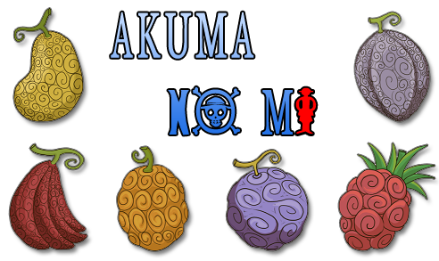
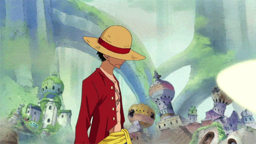
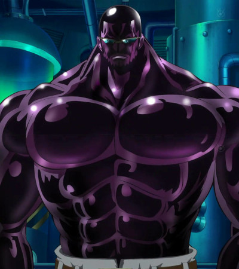

O que é One Piece?
One Piece é uma série de mangá escrita e ilustrada por Eiichiro Oda. Os capítulos têm sido serializados na revista Weekly Shōnen Jump desde 22 de julho de 1997, com os capítulos compilados e publicados em 100 volumes tankōbon pela editora Shueisha até setembro de 2021. One Piece conta as aventuras de Monkey D. Luffy, um jovem cujo corpo ganhou as propriedades de borracha após ter comido uma fruta do diabo acidentalmente. Com sua tripulação, os Piratas do Chapéu de Palha, Luffy explora a Grand Line em busca do tesouro mais procurado do mundo, o "One Piece", a fim de se tornar o próximo Rei dos Piratas.
Luffy e os Chapéus de Palha
A série é centrada em Monkey D. Luffy, um jovem que, inspirado por seu ídolo de infância e poderoso pirata Shanks, "o Ruivo", sai em uma jornada do mar East Blue para encontrar o famoso tesouro One Piece e proclamar-se o Rei dos Piratas. Em um esforço para organizar sua própria tripulação, os Piratas do Chapéu de Palha, Luffy salva e faz amizade com um espadachim chamado Roronoa Zoro, que se torna seu braço direito na busca pelo One Piece. Eles estão acompanhados em sua jornada por Nami, uma navegadora e ladra; Usopp, um atirador e um mentiroso; e Vinsmoke Sanji, um chef de cozinha mulherengo. Eles adquirem um navio chamado Going Merry e se envolvem em confrontos com famosos piratas do East Blue. Conforme Luffy e sua tripulação partem para novas aventuras, surgem novos membros na tripulação, como Tony Tony Chopper, um médico e uma rena antropomórfica; Nico Robin, uma arqueóloga e ex-assassina; Franky, um carpinteiro ciborgue; Brook, um esqueleto músico e espadachim; e Jinbe, um tritão homem-peixe e ex-membro dos Sete Corsários. Uma vez que o Going Merry fica seriamente danificado, os Piratas do Chapéu de Palha adquirem um novo navio chamado Thousand Sunny. Juntos, eles encontram outros piratas, caçadores de recompensas, organizações criminosas, revolucionários, agentes secretos e soldados do corrupto Governo Mundial, e vários outros amigos e inimigos, enquanto navegam nos mares em busca de seus sonhos.
O Mundo de One Piece
O globo do mundo de One Piece O mundo de One Piece é povoado por seres humanos e muitas outras raças, tais como homens-peixe (uma raça híbrida de peixes e humanos, semelhantes aos tritões e sereias), anões, minks (uma raça de animais humanoides), e gigantes. Ele é coberto por dois vastos oceanos, que são divididos por uma enorme cadeia de montanhas chamada de Red Line, que representa o único continente no mundo. A Grand Line, é um mar que corre perpendicular à Red Line, dividindo-se em quatro mares: North Blue, East Blue, West Blue e South Blue. Em torno da Grand Line existem duas regiões chamadas Calm Belts, semelhante às latitudes dos cavalos, onde quase não há correntes de vento e o mar está cheio de grandes criaturas marinhas chamadas de reis dos mares . Devido a isso, os Calm Belts são barreiras muito eficazes para aqueles que tentam entrar na Grand Line. No entanto, os navios da marinha, membros de uma organização intergovernamental conhecida como Governo Mundial, são capazes de usar as pedras-do-mar para mascarar a sua presença dos reis do mares e simplesmente passar pelos Calm Belts. Todos os outros navios são obrigados a seguir uma rota mais perigosa, atravessando uma montanha na primeira interseção da Grand Line e Red Line, um sistema de canais conhecido como Reverse Mountain. A água do mar de cada um dos quatro mares corre até a montanha e se funde no topo, e passam a escorrer de um quinto canal, na primeira metade da Grand Line. A segunda metade da Grand Line, além da segunda interseção com a Red Line, é conhecida como Novo Mundo. As correntes e o clima do mar aberto da Grand Line são extremamente imprevisíveis, enquanto que nas proximidades das ilhas o clima é estável. Os campos magnéticos dentro da Grand Line causam mal funcionamento em bússolas normais, tornando ainda mais difícil a navegação sendo, em vez disso, necessário utilizar uma bússola especial chamada Log Pose. A Log Pose funciona bloqueando o campo magnético de uma ilha e depois bloqueando o campo magnético de outra ilha. O tempo para isso ocorrer depende da ilha. Este processo pode ser ignorado pela obtenção de uma Eternal Pose, uma variação da Log Pose que está permanentemente configurada para uma ilha específica e nunca muda. O mundo de One Piece inclui anacronismos, como os Caracóis-Receptores, caracóis que podem ser conectados a um equipamento elétrico e funcionam como telefones rotativos, máquinas de fax câmeras de vigilância, e dispositivos similares. Os Discos, conchas de certos animais que habitam no céu, podem ser utilizadas para armazenar energia cinética, vento, som, imagens, calor e similares e tem várias aplicações.
Fruta do Diabo
A Fruta do Diabo ou Akuma no Mi é um tipo de fruto que, quando ingerido, conferem poderes ao consumidor. Uma pessoa só pode comer uma fruta do diabo durante a vida, pois comer uma segunda fruta do diabo a levará à morte. Existem três categorias de frutos do diabo:
Paramecia
É uma categoria de frutas que confere ao usuário habilidades sobre-humanas, como os poderes de borracha de Luffy.Zoan
Permite que o usuário se transforme total ou parcialmente em um animal específico. Certas frutas Zoan permitem que o usuário se transforme em criaturas míticas. Através de uma técnica desconhecida desenvolvida pelo cientista Dr. Vegapunk, objetos inanimados também podem "comer" uma fruta do diabo, como a espada unkfreedd e Spandam, que pode se transformar em um elefante.Logia
Dá controle e permite que o usuário "transforme sua estrutura de corpo vivo nos poderes da natureza", como o controle de Ace sobre o fogo.

Haki
Haki é uma habilidade latente que todo ser vivo possui no mundo de One Piece; poucos conseguem despertá-la, e menos ainda dominá-la. Existem três variedades de Haki:
Haki da Observação
Haki da Observação permite sentir a presença de outros seres e também para ter uma forma de precognição limitada. Um dos exemplos é nesse gif abaixo onde o Luffy consegue desviar das balas usando apenas o haki da observação:  Haki do Armamento
Haki do Armamento permite que alguém envolva partes do corpo e até formas inanimadas com uma força semelhante a uma armadura invisível que possui propriedades defensivas e ofensivas. Também permite infligir danos aos usuários de uma fruta do diabo. Um dos personagens especialistas em Haki do armamento é o Vergo como mostrado abaixo:  Haki do Rei
Haki do Rei Conquistador é uma habilidade rara que, ao contrário dos outros dois Hakis, apenas algumas pessoas superdotadas têm. O Haki do Rei Conquistador permite dominar a força de vontade dos fracos. Ele pode ser usado para controle da mente ou até mesmo tornar a vítima inconsciente. Nota-se que as pessoas fortes podem suportar ou até mesmo ignorar completamente os efeitos deste Haki, mesmo que elas não possuam essa habilidade. Este tipo de Haki também pode ter impactos físicos, como causar tremores e destruição a área ao redor do usuário. O video abaixo mostra o Luffy usando haki do rei contra Doflamingo, outro usuário de haki: